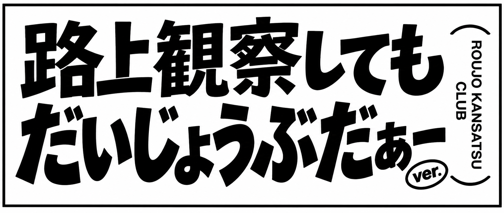
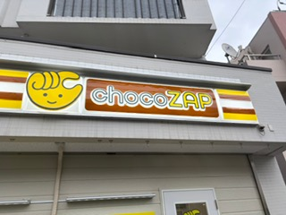
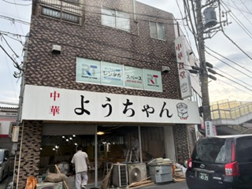
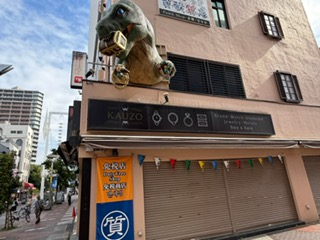

2026.10.14 大豆戸町 佐藤亮太
全国どこにでもあるジムの看板。魅了させられたのは店名とマークのコンビネーションだ。
ほんの少しという「ちょこっと」と店の頭文字「C」が手で表されている。このダブルミーニングに美しさを感じる。

2026.10.14 大豆戸町 佐藤亮太
これからオープンするであろう食堂の看板。中華がメインであるのに、店名はまさかのひらがなのみ。
しかも敬称が用いられているところにユーモアと親しみを感じさせられた。店主のセンスに脱帽。

2026.10.16 伊勢佐木町 佐藤亮太
幼少期の頃からよく行く伊勢崎町通り。小さい時に必ずと言っていいほど目に留まっていた、恐竜のオブジェクト。
宝箱や宝石を持っているのはいやらしく、大人になってからでもインパクトを受け、写真に残した。
日常の風景を、アートとして観察する。
MY ART COLLECTION